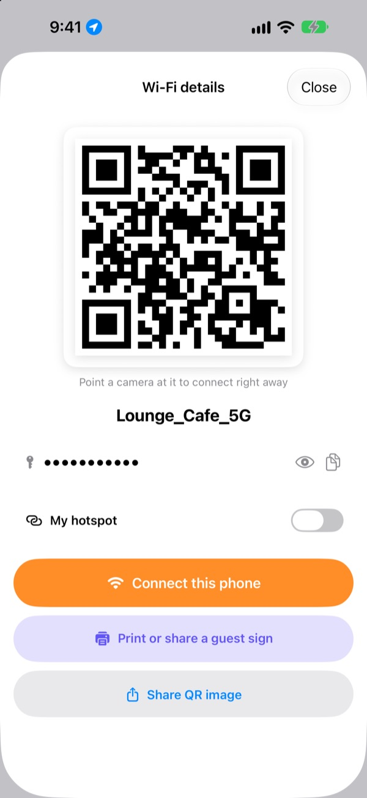
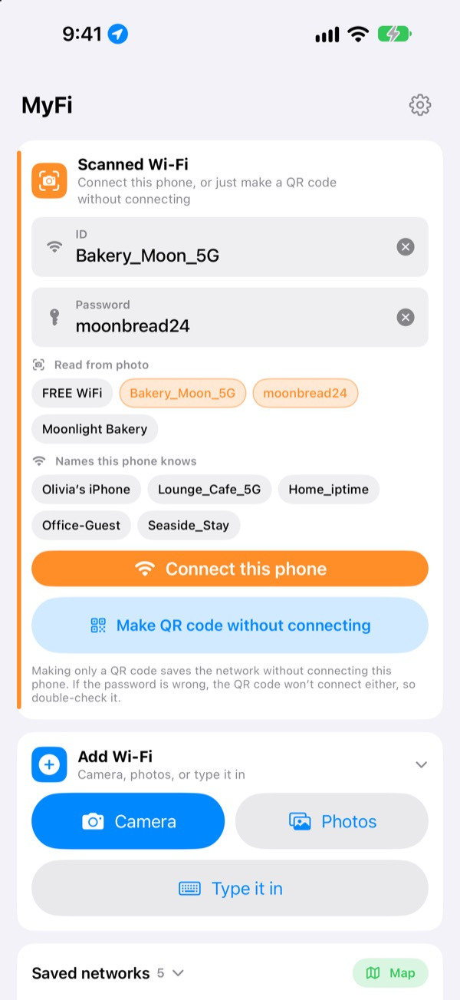
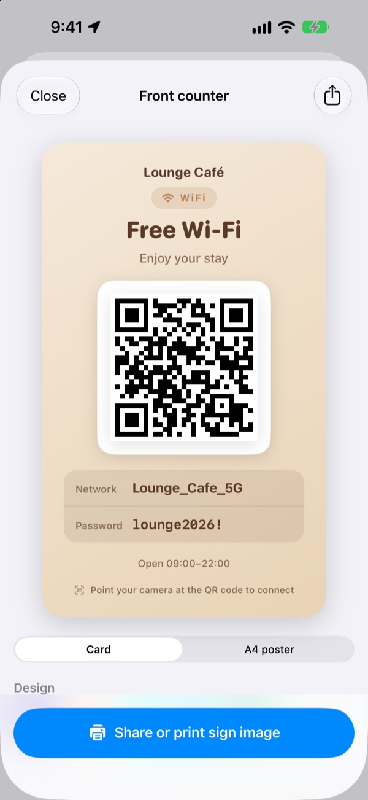
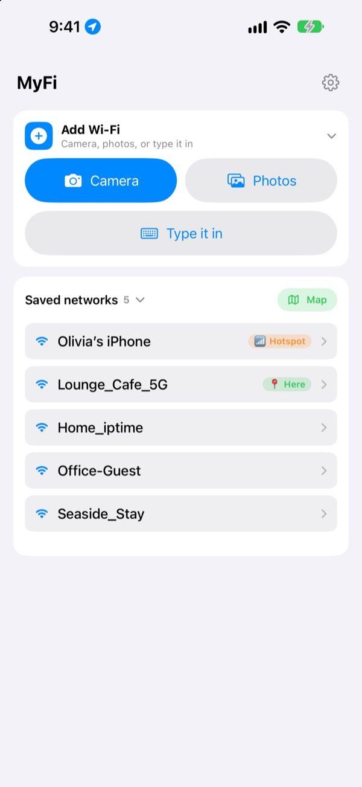

Stop spelling out passwords.
Show a QR code.
Friends just point their camera and they're on. Snap the sign on a café wall and this iPhone connects. No more typos from copying it by hand.
Everything is free. iPhone with iOS 17 or later.

Make your Wi-Fi QR code
Change the name or password and the sign updates as you type. Point a phone camera at it and you will get a real prompt to join.
"What was the Wi‑Fi password again?" How many times today?
You read it out and get the capitals wrong. You copy the card off the café wall and mix up 0 and O. Then you explain it all over again. MyFi turns that into one photo and one QR code.
Snap it, and you're on
Take a photo of the Wi-Fi sign or receipt, or pick one from your library. MyFi reads the network name and password and connects this iPhone. If the sign has a QR code too, it reads that first, so the details are exact.
If the text is unclear, drag a piece picked out of the photo into the name or password field.

Make a guest sign and print it
Pick one of 7 themes and add your shop name, logo and lines like opening hours. Choose a card or an A4 portrait poster, save it as an image, or print it right away with AirPrint.
Keep several signs, one for each shop or table, and edit them any time.

Places you return to come first
Networks you join or share are saved along with where you were. Come back and that network is at the top of the list, and every saved place is on a map.
Put the QR code of the Wi-Fi you share most on your Home Screen or Lock Screen. When a guest asks, just show them your screen.

Three steps to start
- 1
Open the app
It asks for location once, because iOS only shares the name of your current Wi-Fi with apps that have it.
- 2
Snap or type
Photograph a sign, or enter your own Wi-Fi password once.
- 3
Join or show
Connect this iPhone, or bring up the QR code and hold it up to the other person's camera.
Where to find it
- Join from a photo of a sign
Add Wi-Fi, thenCameraorPhotos, thenConnect this phone- Type the details in
Add Wi-Fi, thenType it in- Just make a QR code
Make QR code without connecting- Send the QR code in a message
- Tap a saved network, then
Share QR image - Guest sign
- Tap a saved network, then
Print or share a guest sign - Share your hotspot as a QR code
- Tap a saved network and turn on
My hotspot - Join or share in one swipe
- In the list, swipe right to connect, swipe left to share the QR code
- See saved places
Map, next toSaved networks- QR code on your Home Screen
- Touch and hold the Home Screen and add MyFi's
Wi-Fi QRwidget
You can also open the QR code right away with Siri or the Shortcuts app.
Every feature is free
Free
- Join Wi-Fi from a photo
- Make QR codes and share them as images
- Guest signs in 7 themes, as a card or A4 poster, printed with AirPrint
- Home Screen and Lock Screen widgets
- A map of your saved Wi-Fi
- No ads, no sign-up
Tip jar (optional)
- If you like it, you can leave a tip to support development
- Tips don't unlock anything. Without one, you still get every feature
A tip is a small one-time payment.
No subscriptions and no paid features.
Common questions
Why do I have to type my password?
iOS doesn't let any app read the Wi-Fi passwords saved on your device. So MyFi detects the network name and you enter the password once. After that it uses the saved one.
I can't see the name of the Wi-Fi I'm on.
iOS only gives the Wi-Fi name to apps with location access. Allow MyFi in Settings › Privacy & Security › Location Services. Location is only used to read the network name and to recognize places you come back to.
It read the name or password wrong.
Get closer and keep the photo straight. If it's still off, drag the right piece from the photo into the field, or fix it by hand. If the sign has a Wi-Fi QR code, MyFi reads that and fills in the exact details.
Which signs can it read?
It does best with signs labelled in English or Korean, such as ID, PW, SSID, Network and Password. Even without labels, it picks out the line that looks like a password. Any Wi-Fi QR code on the sign is read exactly, whatever the language.
How does someone join with my QR code?
On iPhone or Android, they point the built-in camera at it and tap the prompt to join. They don't need any app.
Can other people see my password?
The QR code holds standard Wi-Fi login details. You always choose whether to share it, and you can hide the password on a guest sign.
Why can't I connect to my own hotspot?
Your iPhone's Personal Hotspot is this phone, so it can't join itself. Turn on My hotspot and MyFi treats it as a QR code to hand out instead.
Where does my Wi-Fi info go?
MyFi has no server. Network names, passwords, photo results and locations are processed and stored only on your device. There are no ads or trackers. The app sends only anonymous usage stats and error reports to Apple iCloud to help fix it.
Which devices does it run on?
iPhone with iOS 17 or later. The app comes in 24 languages.
Questions or feedback? Write to leeo@kakao.com. I usually reply within 2 or 3 days.